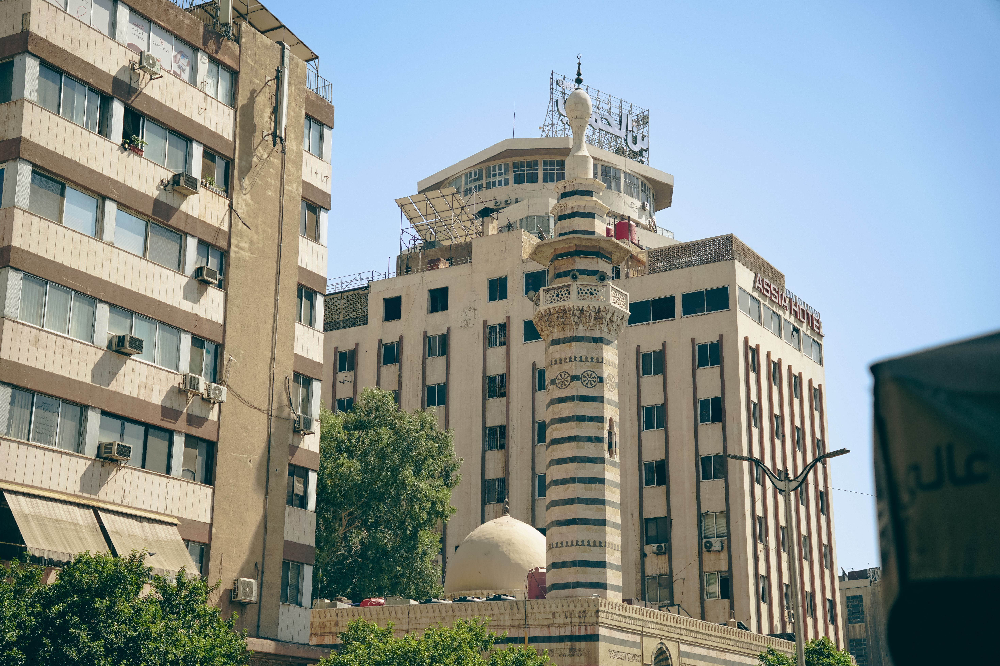
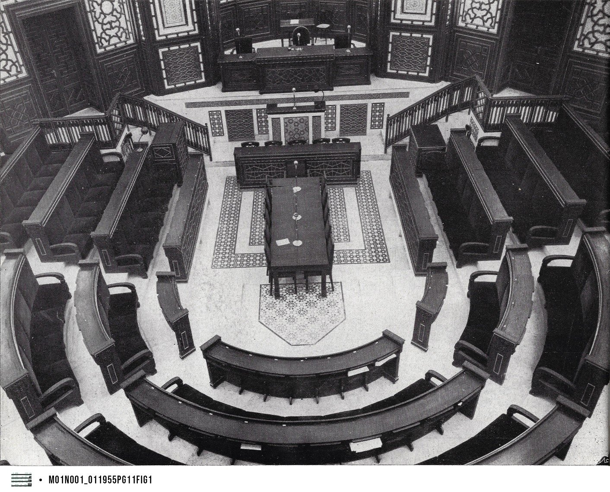
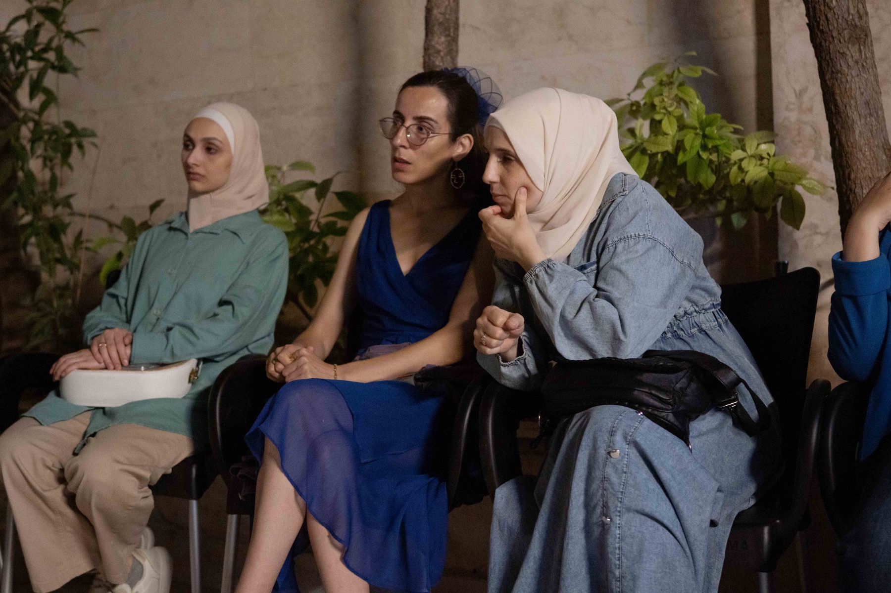

تعليق
عملنا
تطوّر سوريا سيفيك أفكاراً جديدة للسياسات، وتفتح مساحات للنقاش العام، وتساعد الناس على تنظيم مشاريعهم الخاصة، ليشارك مزيد من السوريين في صياغة القرارات التي تؤثر في حياتهم.
البرلمان والسياسات
نطوّر مقترحات للسياسات، وندعم المشرّعين بأبحاث مستقلة، وننقل قرارات البرلمان ونقاشاته إلى الجمهور. ومن خلال الإحاطات والمقابلات والنقاشات العامة، نطرح إمكانات جديدة على جدول أعماله.
اكتشف البرلمان والسياسات
قاعة البرلمان، ١٩٥٥ · AMAسوريا / Wikimedia Commons · ملكية عامة
السجل البرلماني
نجمع محاضر الجلسات البرلمانية وننشرها لتبقى متاحة للجميع.
تصفّح المحاضر

آفاق مدنية
نربط الطلاب في سوريا وخارجها، وندعم القيادات المدنية الناشئة، ونساعد الناس على تحويل أفكارهم إلى مشاريع.